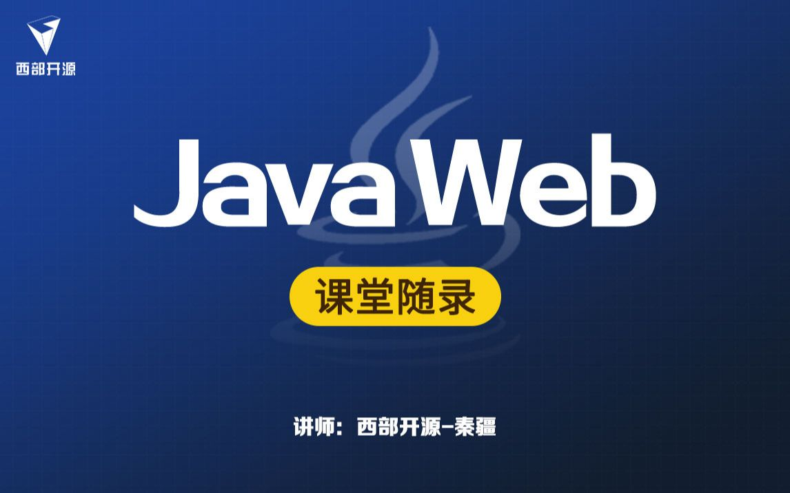
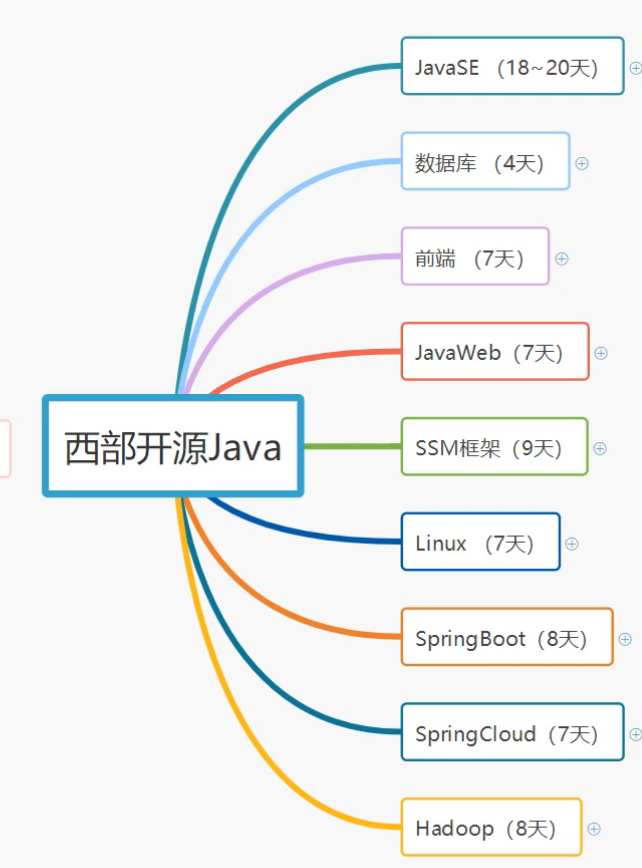

JavaWeb学习之路（一）——动机与准备
前期知识储备
目前我已经点亮以下技能点
- 前端html、css、js，以及jquery、vue框架的基本使用。
- 熟练使用python语言，掌握或了解c语言、Java等流行语言。
- 掌握基本数据结构与算法。
- 使用MySQL数据库。
- 熟悉web前后端交互，request与response。
- 用ThinkPHP、Flask、Django开发过几个中小型项目。
为什么想要学习JavaWeb
经过这一年多的web开发的学习，我经历了ThinkPHP->Flask->Django三个历程，前半阶段主力语言是php，后半阶段，也就是目前，我的主力语言是Python。
php，怎么说呢，刚开始，我觉得它跟C语言挺像的，后来学习了Java后发现，我用的ThinkPHP框架内的结构跟Java更像。但是呢，这个$是在有点令人讨厌，之后一次项目的数组操作不出来（是我太菜了），让我下定决心废弃它。
python，目前是我最喜爱的语言。我可以很快速地完成我想要的功能。但是，鱼与熊掌不可兼得，开发效率的提升，伴随的是运行效率的严重下降。它的运行效率实在是不行 ！
据我了解，目前市场上主流的web后端语言是Java，虽然我有点不太喜欢Java（感觉太啰嗦了），但是有了比较好用的IDE，问题好像不是太大。并且目前有很多成熟的解决方案，学习起来应该也比较easy。
计划如何学习
目前学习主战地：B站
我原本是计划看尚硅谷或者其他培训班的课程。但是我前几天发现了一个讲课效果特别好的up主:遇见狂神说的个人空间 - 哔哩哔哩 ( ゜- ゜)つロ 乾杯~ Bilibili
他的课感觉很不错：

所以计划跟着他看完JavaWeb内容，并继续学习其他知识。
学习路线

本博客所有文章除特别声明外，均采用 CC BY-NC-SA 4.0 许可协议。转载请注明来自 HUII's Blog！